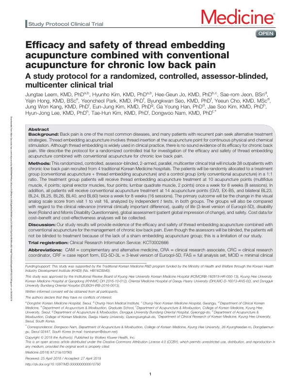

Efficacy and safety of thread embedding acupuncture combined with conventional acupuncture for chronic low back pain
Leem J, Kim H, Jo HG, Jeon Sr, Hong Y, Park Y, Seo B, Cho Y, Kang JW, Kim EJ, Han GY, Kim JS, Lee HJ, Kim TH, Nam D
Medicine 97(21):e10790

첫 장 · 오픈액세스First page · open access
논문 소개Summary
요통은 성인의 약 75%가 살면서 한 번은 겪는 가장 흔한 근골격계 질환입니다. 비스테로이드 소염제로 조절되기는 하지만 부작용 때문에 장기 복용은 권하지 않고, 만성 요통 환자의 삶의 질은 건강한 사람보다 낮습니다. 매선은 침 자리에 폴리디옥사논 실을 넣어 계속 자극이 가게 하는 시술로 한국과 중국, 대만에서 널리 쓰이지만 만성 요통에 대한 확실한 근거는 없었습니다.
네 곳의 한방병원에서 만성 요통 외래환자 38명을 모아 치료군과 대조군에 1대 1로 나누는 무작위 배정, 평가자 눈가림, 다기관 임상시험의 프로토콜입니다. 치료군은 기존 침 치료에 매선을 더하고 대조군은 기존 침 치료만 받습니다. 매선은 뭇갈래근 네 곳, 척추세움근 네 곳, 허리네모근 두 곳 모두 열 곳에 주 1회씩 8주 동안 여덟 차례 놓습니다. 침 치료는 두 군 모두 요양관과 십칠추, 양측 신수·기해수·대장수·관원수·위중·곤륜 열네 곳에 주 2회씩 8주 동안 열여섯 차례 받습니다.
일차 평가변수는 첫 방문에서 열여섯 번째 방문까지의 시각아날로그척도 변화입니다. 이차로 최소임상중요차이로 본 임상적 의미와 삶의 질, 안전성을 봅니다. 표본 수는 군당 19명으로 계산해 모두 38명입니다.
프로토콜이므로 결과는 없습니다. 저자들은 대신 이 설계의 약점을 미리 적어 두었습니다. 첫째, 표본 수를 계산할 때 참고한 앞선 연구는 치료 기간이 4주였는데 이 시험은 8주여서 표본 수를 과대추정했을 수 있습니다. 둘째, 그 앞선 연구는 진짜 매선과 가짜 매선을 견주어 참여자를 눈가림할 수 있었지만 이 시험의 대조군에는 매선을 아예 쓰지 않으므로 참여자와 시술자가 배정을 알게 되고, 이것이 결과에 영향을 줄 수 있습니다. 셋째, 구제약물을 정해 두지 않아 통증이 심한 참여자의 탈락이 늘어날 수 있습니다.
무엇을 모르는지를 미리 적어 두는 것이 프로토콜을 공개하는 이유입니다.
Back pain is the commonest musculoskeletal condition, experienced at some point by roughly 75% of adults. Non-steroidal anti-inflammatory drugs control it, but long-term use is discouraged for its side effects, and people with chronic low back pain report poorer quality of life than the healthy. Thread embedding acupuncture inserts polydioxanone sutures at acupuncture points for continuous stimulation and is widely used in Korea, China and Taiwan — yet sound evidence for chronic back pain was absent.
This is the protocol for a randomised, assessor-blinded, multicentre trial recruiting 38 outpatients with chronic low back pain at four Korean medicine hospitals and allocating them 1:1. The treatment group receives thread embedding added to conventional acupuncture; the control group receives conventional acupuncture alone. Thread embedding is performed at ten points — four in the multifidus, four in the spinal erectors, two in the quadratus lumborum — once weekly for eight weeks. Both groups receive conventional acupuncture at fourteen points (GV3, EX-B5 and bilateral BL23, BL24, BL25, BL26, BL40 and BL60) twice weekly for eight weeks, sixteen sessions in all.
The primary outcome is the change in visual analogue scale score from visit 1 to visit 16. Secondary outcomes cover clinical relevance judged by the minimal clinically important difference, quality of life, and safety. The sample size was calculated as 19 per group, 38 in total.
Being a protocol, it reports no results. The authors instead set down the weaknesses of the design in advance. First, the study used for the sample size calculation ran four weeks against this trial's eight, so the sample size may be overestimated. Second, that earlier study compared real with sham thread embedding and could therefore blind participants, whereas here the control group receives no thread embedding at all, so participants and practitioners will know the allocation — which may influence the results. Third, no rescue medication was specified, which could raise the dropout rate among those in severe pain.
Setting down what one does not know is the reason for publishing a protocol at all.
인용Cite
Leem J, Kim H, Jo HG, Jeon Sr, Hong Y, Park Y, Seo B, Cho Y, Kang JW, Kim EJ, Han GY, Kim JS, Lee HJ, Kim TH, Nam D. Efficacy and safety of thread embedding acupuncture combined with conventional acupuncture for chronic low back pain. Medicine. 2018;97(21):e10790. doi:10.1097/MD.0000000000010790